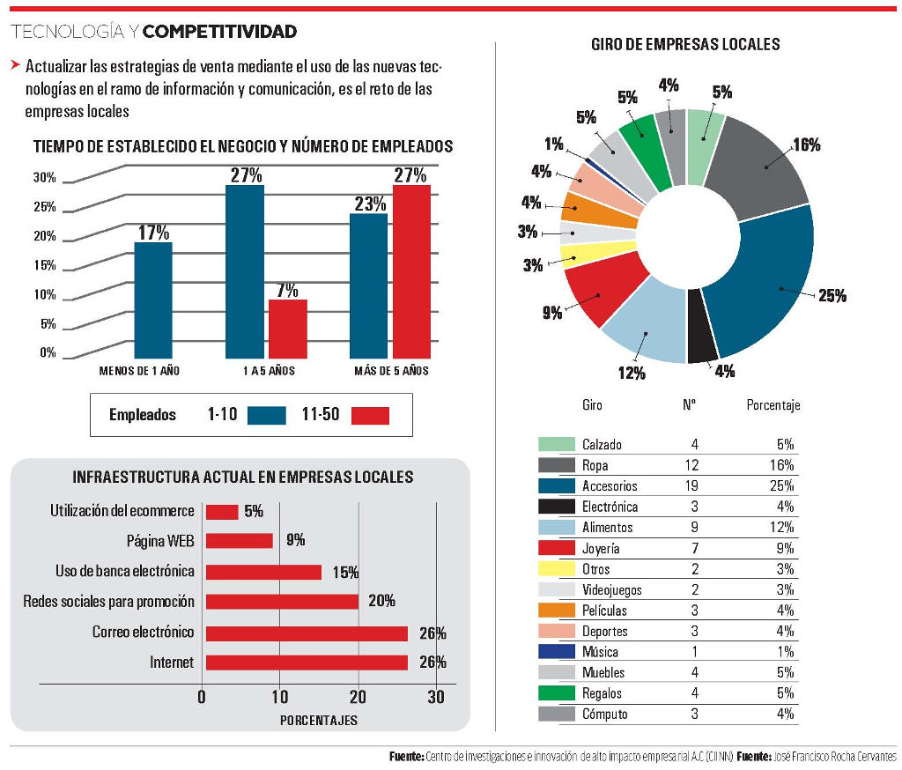

Las empresas locales deben ser conscientes de la necesidad de una rápida actualización tecnológica y de la importancia que tienen hoy en día las tecnologías de la información y de la comunicación, por lo que se hizo un estudio en Torreón durante el 2015 a empresas micro (de 1 a 10 empleados) y Pequeñas (de 11 a 50 empleados) del sector comercio, para conocer el grado de aprovechamiento que le dan a las TIC´S y en especial al ecommerce (comercio en línea).
El modelo a analizar fue el B2C, (business to consumer), comercio de una empresa hacia el consumidor, con un tamaño de muestra de 60 empresas. Como limitaciones se incluyeron solamente micro y pequeñas, orientadas al sector comercio.
Dentro del sector de micro empresas un 17% tienen menos de un año de haber sido creada, el 27% tiene de 1 a 5 años y el 23% es mayor a 5 años. En cuanto a las pequeñas empresas el 7% registra de 1 a 5 años de funcionamiento y el 27% es mayor a 5 años. En total el 50% de las empresas tiene más de 5 años de vida.
En cuanto al giro de las empresas se tomaron en cuenta las de sector comercio, la mayoría de ellas se ubica en el ramo de accesorios con un 25%, en el de ropa 16%, de alimentos 12%, de joyería 9% y el resto se divide en diversos giros.
Sobre el tipo de infraestructura con la que cuentan, se observa que un 26% tiene acceso a Internet y utiliza el correo electrónico, un 20% se promociona por medio de las redes sociales y solo un 15% utiliza la banca electrónica, un 9% cuenta con página web y solamente un 5% de la muestra utiliza el comercio electrónico.
Este último dato concuerda con los resultados de los últimos censos económicos de INEGI, donde se menciona que únicamente tres unidades económicas en Torreón se dedican al giro de “Comercio al por menor exclusivamente a través de Internet y catálogos impresos”.
Menos del 30% de las empresas encuestadas utiliza el internet y el correo electrónico en Torreón, lo que sugiere que se está desaprovechando el uso de la tecnología. A la vez, también se desaprovechan otros recursos, como lo valioso que es la mercadotecnia por las redes sociales, ya que por medio de comentarios y recomendaciones se puede cautivar más clientela. Por otra parte el ecommerce para ventas locales se tiene que impulsar, para ampliar el nicho de mercado y tener un mayor desarrollo económico de forma local.
Las empresas ignoran el potencial de ventas online que tienen los giros de electrónica y cómputo, ropa, calzado y accesorios.
Un ejemplo internacional de aprovechamiento de la tecnología es la empresa española Zara, que para el 2010, abrió su tienda online para la temporada otoño/invierno 2010, en diversos países dando un paso estratégico para consolidar su imagen de marca internacional.
Por otra parte, en un estudio realizado a consumidores, se demuestra que hay compradores locales potenciales online, los cuales compran a cadenas comerciales, tiendas nacionales y en gran porcentaje a empresas internacionales, pero poco conocen de comercios locales.
Sus preferencias de compra son en artículos de electrónica y cómputo, ropa y zapatos principalmente, así como accesorios novedosos. Una de las características que están buscando como consumidores es la variedad y novedad en productos, el poder comparar los precios, obtener promociones, o comprar productos que no se encuentran en la ciudad.
El enfoque de clientes para ventas por internet se ubica en buena parte en la generación “Millennials” que es un grupo de jóvenes nacidos entre los 80’s y 90’s, y se caracterizan por haber crecido en una era digital, lo que los hace permanecer constantemente conectados. Debido a lo anterior utilizan la compra en línea, a la vez comparten sus experiencias como consumidores y opinan a través de las redes sociales.
Algunas recomendaciones para contar con una página web adecuada son: su facilidad para navegar, lo atractivo del diseño y el catálogo, así como sus características claramente específicas. La empresa debe mostrar que está legalmente constituida y debe tener a la vista datos para establecer contacto como el teléfono, mail, un chat online o mensaje para aclaración de dudas, los datos de políticas de privacidad, políticas de cambio o devolución de un producto.
Otra característica muy importante es la variedad sobre las formas de pago, la facilidad de registro y que al ir adquiriendo productos no se salga la página y se vaya desglosando el número de productos y el costo por cada uno. También el poder calcular según el código postal el costo de envío o si este será gratuito.
Este estudio se logró gracias a la colaboración del Centro de Investigaciones e Innovación de Alto Impacto Empresarial A.C (CIINN) y a sus miembros: Alejandro Hernández Pineda, Juan Diego Hinojosa Sandoval, Cecilia Contreras Villareal y Diego Maury Reveles. También se hace un reconocimiento al presidente de la CANACO, Carlos Rangel.
Infografía
